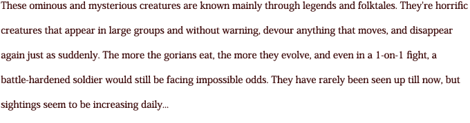
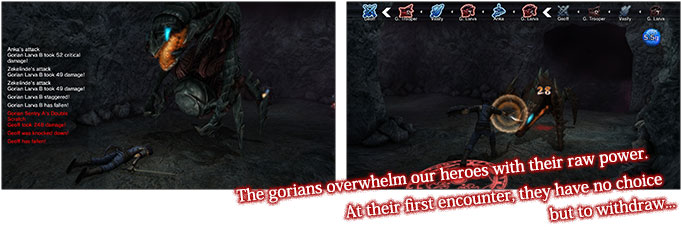

Story
In a chaotic world, a single fortress city is humanity's last beacon. Humans have taken up sword and magic against the encroaching beasts to keep their light from fading. But some travel into the wilderness, seeking fortune. One such pair is Geoff and Vasily, who act as bodyguards for a young explorer, diving into mines overflowing with dangerous creatures. These explorers, known as Bergmans, long ago gained control of mines throughout the wilderness, claiming the precious ore buried within and using it to power the last human city and provide a peaceful life for its more affluent citizens. But even now, they clash with the beasts of the wilderness, and must use whatever precious resources they can scavenge to protect their city. Geoff, meanwhile, dreams of proving his worth and earning citizenship of his own. But he would soon discover that life wasn't as simple as he once thought. It began suddenly - selection and survival. Alliances were tested, strained, broken. The world was changing, evolving, and Geoff would stand as a central figure in the upheaval. He would have to confront...the Natural Doctrine.

The Fortress City of Feste

This human city has prospered in recent years due to the development of magical science. This technology is at the heart of both the military, led by the Ritterorden, and by the Senate political body. The city itself is the only remaining home to the humans, who struggle against the land's other species.
The Truth About the World
Pluton is a rare material which is the source of all the world's magical power. In its raw form, it's a highly dangerous substance which releases a toxin lethal to most humans. For reasons unknown, goblins are not affected by the toxin, and have found a way to refine the deadly material into a more benign form. This refined Pluton is coveted by humans, and so people have taken to invading the goblin mines, taking their Pluton, and killing any goblin that stands in their way. With the relatively recent development of magical science, the fortress city of Feste has undergone remarkable expansion and development, becoming the center of human civilization. At the same time, this has led to a rapid increase in demand for Pluton, the magical substance crucial to the city's existence. This has led to unavoidable friction between humans and the other species, especially the goblins. The Bergmans are at the center of this friction, as they were specifically formed to head into the goblin mines and steal their Pluton in order to support humanity's use of mysterious magic.


These ominous and mysterious creatures are known mainly through legends and folktales. They're horrific creatures that appear in large groups and without warning, devour anything that moves, and disappear again just as suddenly. The more the gorians eat, the more they evolve, and even in a 1-on-1 fight, a battle-hardened soldier would still be facing impossible odds. They have rarely been seen up till now, but sightings seem to be increasing daily...

The gorians cast an ominous shadow over the world of our story. They come in a number of different forms, and are clearly distinct from any of the world's other species. The smaller gorians play a key role early on, but as the story unfolds, our heroes will have to confront bigger and bigger versions of the beasts. They simply grow and grow, and devour everything in their way. What truth lies behind this mysterious species? Why did they appear? What do they want? These answers lie deep within the doctrine of nature...


{kind=link}
{kind=link}
{kind=link}
{kind=link}
{kind=link}